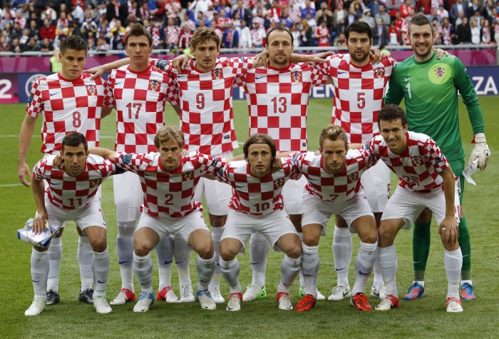

A seleção croata participou de quatro edições da Copa do Mundo de futebol. Em 1998 a Croácia participou de sua primeira Copa do Mundo de futebol como país independente da Iugoslávia e chegou ao 3º lugar da competição, sua melhor participação em mundiais.
Não obteve títulos em Copa do Mundo.
| Data/Hora | Estádio | Adversário |
|---|---|---|
| 23 nov 2022 / 07h00 | Estádio Al Bayt | Marrocos |
| 27 nov 2022 / 13h00 | Estádio Internacional Khalifa | Canadá |
| 1º dez 2022 / 12h00 | Estádio Ahmed bin Ali | Bélgica |